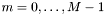
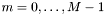

|
|
|
#include <nfft3.h>
Data Fields | |
| int | N_total |
| Inherited public members. | |
| int | M_total |
| Total number of samples. | |
| fftw_complex * | f_hat |
| Vector of Fourier coefficients, \ size is N_total float_types. | |
| fftw_complex * | f |
| Vector of samples, \ size is M_total float types. | |
| void(* | mv_trafo )(void *) |
| Pointer to the own transform. | |
| void(* | mv_adjoint )(void *) |
| Pointer to the own adjoint. | |
| int | N |
the bandwidth  | |
| double * | x |
the nodes ![$\mathbf{x}(m) = * \left(x_1,x_2\right) \in * [-\frac{1}{2},\frac{1}{2}) \times * [0,\frac{1}{2}]$](form_169.png) for * , for * , | |
| int | t |
| < the next greater power of two with * respect to | |
| unsigned int | flags |
| the planner flags | |
| nfft_plan | plan_nfft |
| the internal NFFT plan | |
| fftw_complex * | f_hat_intern |
| Internally used pointer to * spherical Fourier coefficients. | |
Definition at line 1998 of file nfft3.h.
Inherited public members.
Total number of Fourier \ coefficients
Definition at line 2001 of file nfft3.h.
Referenced by main(), ndsft_adjoint(), ndsft_trafo(), nfsft_init_guru(), and nfsft_trafo().
| int nfsft_plan::t |